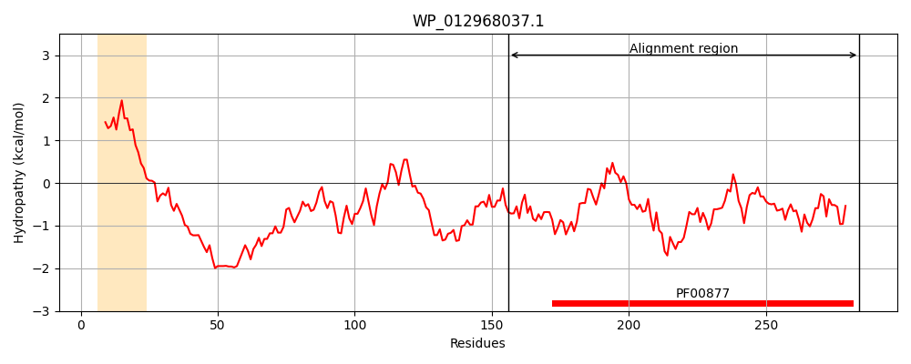
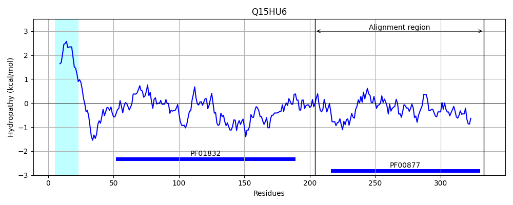
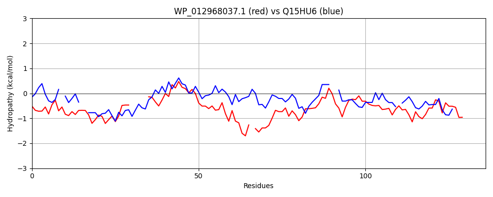

Hit Accession: Q15HU6
Hit TCID: 3.A.7.14.2
Hit Description: gnl|BL_ORD_ID|12757 gnl|TC-DB|Q15HU6|3.A.7.14.2 TcpG - Clostridium perfringens.
Mach Len: 136
e:0.000000
Query TMS Count : 1
Hit TMS Count: 1
TMS-Overlap Score: 0.000000
Predicted Substrates:CHEBI:4291;deoxyribonucleic acid
BLAST Alignment:
Score: 182 , Bit scores: 74 bits, E-value: 2.2e-15, Alignment length: 136, Percentage identity: 37
Query: 156 VQKAQSTAMNKLMGQLGKPYRWGGTSPRTG-----FDCSGLVYYAYKDLVKIHIPRTANEMYHLRD-ARPVDRDELQSGDLVFFRTRGRGTADHVGVYVGNGKFIQSPRTGRDIQITSLSEDYWVRHYVG-ARRVM 284
++KA M K +G+ PY WGG + FDCS LV+Y Y PR + + L + +PV E++ GDL+FF T GR H+G+Y+GNGKF+ T + + I L+ YW R++ G RRV+
Sbjct: 204 IEKAIEAGM-KWVGK--SPYVWGGGRNQADVDAGRFDCSSLVHYCYASAGIQLGPRESVTTWSLINMGKPVPASEMKRGDLIFFDTAGRN--GHIGIYLGNGKFLNDSST-QGVSIGDLNSAYWSRYFNGNVRRVV 333 | Protein Hydropathy Plots: |
|---|
|  |  |
Pairwise Alignment-Hydropathy Plot:
|
|---|
|  |